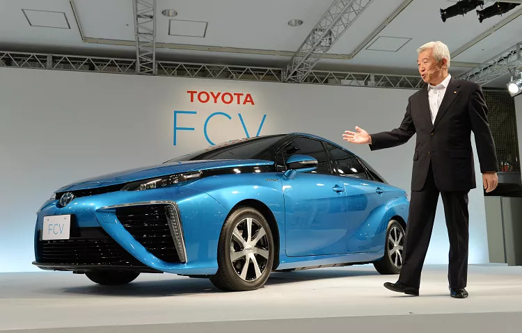

Hidrojenli mi elektrikli mi? Çevre dostu araçlardan hangisi daha avantajlı?
İklim krizi ve küresel ısınma sonrası elektrikli araçlar son yıllarda popüler hale geldi. Ancak
hidrojenli araçlar da tıpkı elektrikli otomobiller gibi çevre dostu ve giderek yaygınlaşıyor. Hızlı
yakıt dolumu ve uzun menzile sahip olması gibi özelikleri olan hidrojenli araçlar hakkında ne biliyoruz?
Son yıllarda çevre dostu elektrikli araçların satışındaki artış, sektörde fosil yakıt kullanmayan
teknolojilere olan ilgiyi artırdı. Tesla, Nissan, Toyota Renault ve BMW gibi markaların elektrikli
araçları bazı ülkelerde benzinle çalışan araçların satışını şimdiden geçti bile. Tıpkı elektrikli
araçlar gibi doğa dostu olan, hızla yaygınlaşan fakat otomobil sektöründe henüz popüler olmayan yeni bir
teknoloji bulunuyor: Hidrojenli araçlar.
Hidrojenli araçlar için "benzinli ve elektrikli araçların karışımı" benzetmesi yapılabilir. Elbette
aralarında büyük farklılıklar var. Hidrojenli araçlar tamamen doğa dostu. İçerisinde elektrikli araçlar
gibi bir batarya bulunuyor. Bu batarya su ve hidrojen moleküllerini çarpıştırarak elektrik elde ediyor.
Bu araçların da tıpkı benzinli otomobillerdeki egzoz borusuna benzer bir atık sistemi bulunuyor. Ancak
hidrojenle çalışan araçlarda açığa çıkan atık sadece su damlası.
Hidrojenli araçların depoları tıpkı benzinli araçlar gibi dolduruluyor. Depo doldurma işlemi benzinli
araçlarda 2-3 dakika sürerken, hidrojenli araçlarda bu işlem hemen hemen aynı sürede tamamlanıyor. Orta
boyutta bir depoya sahip benzinli araçlar 600 kilometre kadar menzile ulaşırken, bu rakam hidrojenli
araçlarda 400 kilometre civarında.

'Yakıt hücreli elektrikli araç' olarak da bilinen hidrojenli otomobillerin özellikleri
Hidrojenli araçlara kısaca "yakıt hücreli elektrikli araçlar" da deniyor.(Fuel cell electric vehicles-
FCEVs) FCEv'lerin nüfusa ortalaması göz önünde alındığında dünyada en yaygın olduğu ülke Danimarka.
Ancak İngiltere, Fransa, Norveç ve Almanya gibi ülkeler bu teknolojiye önemli yatırımlar yaparak sektöre
öncülük ediyor.
Hidrojenli araçlar bazı yönleriyle elektriklilerden daha avantajlı
GSF Car Parts İnternet Satış Müdürü Mark Barclay, hidrojenli araçların gelecekte yaygınlaşacağını ancak
son dönemde elektrikli araçların popüler olmasından dolayı biraz geri planda kaldığını belirtiyor.
Barclay's e göre hidrojenli araçların elektrikli olanlara kıyasla birçok avantajı bulunuyor: "Hidrojenli
araçların bataryaları çok daha hafif. Ayrıca çok kısa sürede deposunu doldurabiliyorsunuz. Bu durum
toplu taşıma araçları ve farklı iş modelleri için çok büyük bir avantaj."
Hidrojenli araçların en büyük iki dezavantajıysa fiyatı ve dolum istasyonlarının azlığı. Ortalama bir
hidrojenli aracın fiyatı 60 bin euro civarında (yaklaşık 380 bin TL). Ayrıca dolum istasyonları pek
yaygın değil. Bir kilo sıkıştırılmış hidrojen, benzinden 8 kat daha az yer kaplıyor. Bu sebeple
hidrojenli araçların yakıtı daha az ağırlık yapıyor. Benzinli bir araç, uzun yol ya da şehir içi
trafiğine göre farklı tüketim oranlarına sahip olsa da kilometre başına ortalama 0.17 euro (yaklaşık 1
TL) yakıyor. Bu rakam benzinli araçlarda yaklaşık 0.14 euro civarında. (Değerler Toyota'nın hidrojenli
Mirai modelinin yakıt tüketim oranına göre göre alınmıştır.)
Ancak gelişen teknolojiyle birlikte sıkıştırılmış sıvı hidrojen elde etmenin maliyeti hızla düşüyor. Bu
da ileride hidrojenli araçların yakıt maliyetini düşürecek. Ayrıca gelişen teknolojiyle birlikte yüksek
olan hidrojenli otomobil fiyatları da yine düşüşş eğiliminde gözüküyor.
Norveç'te faaliyet gösteren ve elektrikli araçlara yenilenebilir enerji sağlayan firma DNV GL'nin
danışmanlarından Jeremy Parkes, elektrikli araçlarla hidrojenli otomobilleri dört farklı kıstasla
kıyaslıyor. Araç menzili, performans, yakıt dolum kolaylığı ve fiyat aralığı.
Fiyat bakımından elektrikli, yakıt dolum hızı açısından hidrojenli araçlar önde
Parkes'a göre elektirkli ve hidrojenli araçlar bazı yönleriyle diğerinden daha avantajlı: "Menzil
bakımından hidrojenli araçların performansı elektrikli olanlara göre biraz daha iyi. Ancak elektrikli
araçların yakıt istasyonları daha yaygın. Bu bakımdan da elektrikli araçlar önde gözüküyor. Bunun
yanında hidrojenli araçların depoları tıpkı benzinli araçlar gibi çok kısa sürede doldurulabiliyor.
Ancak yakıt istasyonlarının maliyeti de elektrikli araçlar için tasarlanan dolum tesislerinden daha
pahalı. Bunun yanında elektrikli araçları insanlar evlerinde doldurabiliyor. Bu hidrojenli araçlar için
mümkün değil. Elektrikli araçlar için üretilen elektrik daha çevre dostu yöntemlerle elde edilebiliyor.
Ancak hidrojen elde etmek için genelde fosil yakıtla çalışan bir sistem kullanılıyor. Bu sistemler
'metan gazı buharı yapılandırılması' sonucu hidrojen elde ediyor."
Japon ve Güney Koreli firmaların FCEV'lere yatırımı büyük
Özelikle Toyota, Honda ve Hyundai gibi Uzak Doğu firmaları hidrojenli araçlara büyük yatırımlar yapıyor.
Avrupa ve ABD'li şirketlerin de onların gerisinde kaldığı pek söylenemez. Ancak hidrojenli araçların
elektrikli ve hibrit araçlar gibi yaygınlaşması için pek çok açıdan geliştirilmesi gerektiğinde uzmanlar
hemfikir.
Jeremy Parkes hidrojenli araçlar konusunda umutlu konuşuyor ve ekliyor: "Hidrojenli araç endüstrisinin
yeni teknolojiler geliştirmesi ve yatırım yapması gerekiyor. özellikle de maliyetlerin düşürülmesi
konusunda. Hidrojenli araçlar 10 sene içerisinde elektrikli araçları tehdit eder hale gelebilir ya da
onların yerini alabilir. Ancak endüstrinin buna hazırlanması gerek."